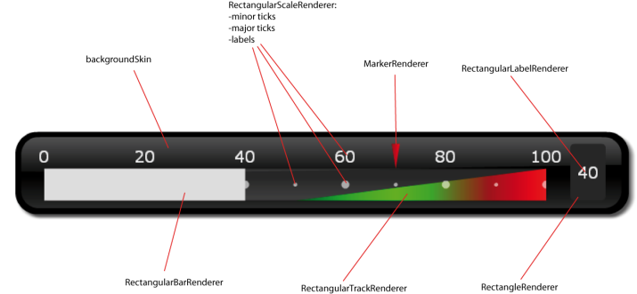
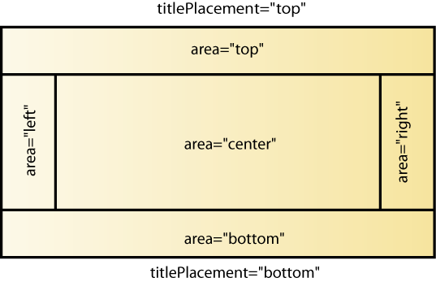

A rectangular gauge can be horizontal or vertical depending
on the value of its direction property
It can contain several visual elements, as shown in the illustration
above. These elements are laid out according to the value of their area property as shown in the following illustration:

The side areas (top, bottom, left, and right) are used
to place fixed size indicators, such as labels or various indicators
about the gauge state. The center of the gauge is used for the core
elements, such as the scale or the value renderers.
The visual elements of a rectangular gauge extend the
RectangularGaugeElement class or one of its subclasses.
They are characterized by:
An area of reference that can either
be top, bottom, left, right, or center
A position and a size specified using x, y, width, and height properties, optionally expressed in a percentage of their corresponding
area
The layout of the visual elements of a rectangular gauge
is processed in the following order:
If the showTitle style property is true, the title is
placed at a reserved area at the top or bottom depending on the value
of the titlePlacement property.
The side areas are sized so that the
elements in the left and right, on one hand, and top and bottom, on
the other hand, can fit respectively their measured width and height
inside these areas.
The elements in the side areas are positioned
and sized according to the value of their x, y, width, and height properties. Percentage
values are relative to the bounds of the corresponding areas computed
in step 2.
The remaining area in the center of
the gauge is used to lay out the elements in this area. If the gauge
has no explicit width, either in pixels or in percentage, the width
of the center area will be computed from the measured width of the
elements in this area. Similarly, if the gauge has no explicit height,
either in pixels or in percentage, the height of the center area will
be computed from the measured height of the elements in this area.
If the gauge has an explicit width (or height), the elements in the
center take as much width (or height) as is available
The background and foreground skins,
defined using the backgroundSkin and foregroundSkin properties, if any, are sized so
that they cover the whole gauge except the title area.